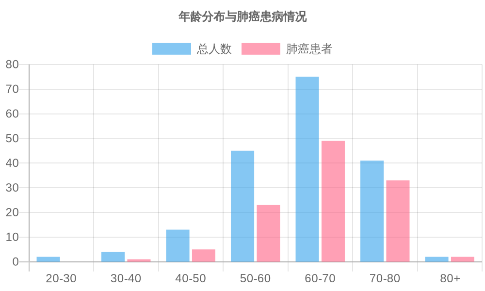
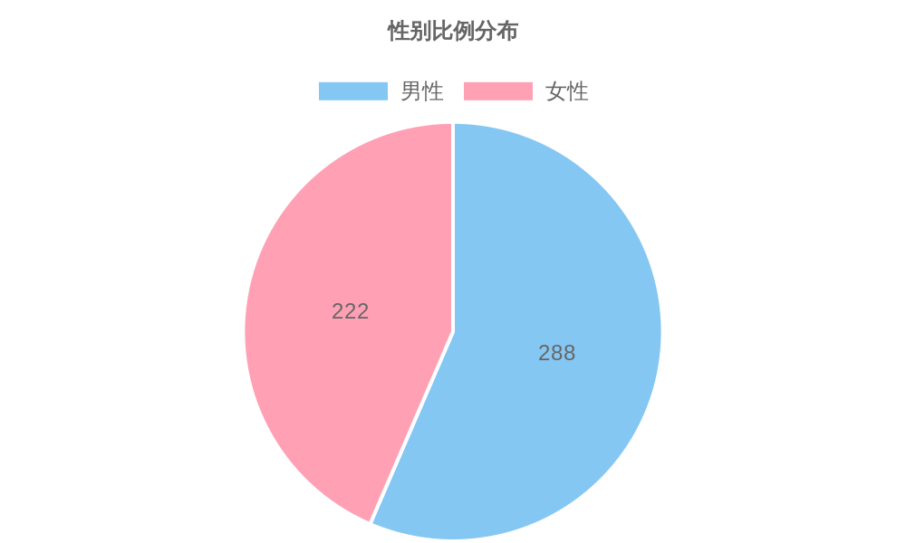
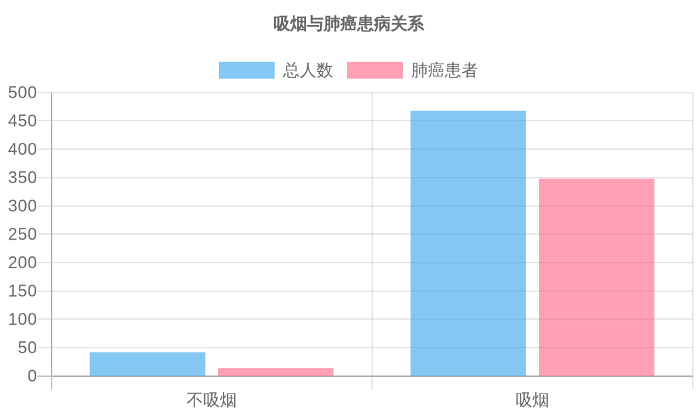
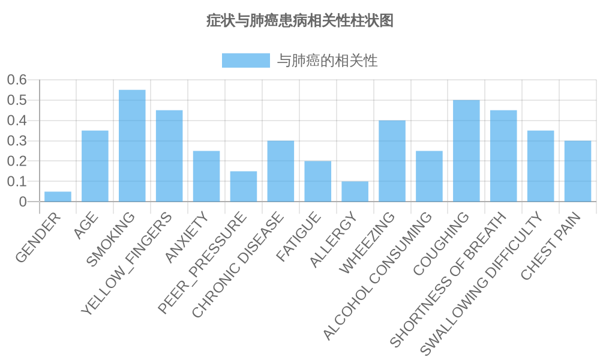

📊 数据概览
本分析基于包含510个样本的数据集，涵盖了年龄、性别、生活习惯和健康状况等多个维度的信息。数据集包含16列特征，其中最后一列LUNG_CANCER为标签列。
主要特征分为以下三类：
- 基本身份信息：性别、年龄
- 生活习惯：吸烟、手指发黄、饮酒
- 健康状况：焦虑、同伴压力、慢性病、疲劳、过敏、喘息、咳嗽、呼吸急促、吞咽困难、胸痛
🔍 关键发现
🚬 吸烟与肺癌
吸烟者中肺癌患者比例显著高于不吸烟者（74.3% vs 33.3%）
👵 年龄因素
60-70岁年龄段肺癌患者比例最高（65.3%），且随着年龄增长风险持续上升
🧬 关键症状
咳嗽（相关系数0.5）和呼吸急促（相关系数0.45）与肺癌高度相关
🚹 性别差异
男性患者比例（57.6%）高于女性（44.4%），这可能与生活习惯有关
📈 数据可视化
年龄分布与肺癌患病情况
年龄与肺癌患病风险趋势图

性别比例分布
吸烟与肺癌患病关系
症状与肺癌相关性
📌 结论与建议
主要结论：
- 吸烟是肺癌患病的最重要风险因素，相关系数达到0.55
- 年龄是另一个重要风险因素，随着年龄增长，肺癌风险显著增加
- 特定症状与肺癌高度相关，特别是咳嗽和呼吸急促
- 男性患者比例较高，这可能与生活习惯有关
预防建议：
- 戒烟：鉴于吸烟与肺癌的高度相关性，戒烟是预防肺癌最有效的方法
- 定期体检：40岁以上人群应定期进行肺部检查，尤其是有吸烟史的人群
- 关注症状：注意咳嗽、呼吸急促等症状，及时就医检查
- 健康生活方式：保持健康饮食、适度运动，增强身体免疫力
- 减少酒精摄入：数据显示酒精摄入与肺癌有一定相关性
进一步研究建议：
- 进行长期追踪研究，了解肺癌风险因素的动态变化
- 收集更多环境因素数据，如空气污染暴露等
- 研究遗传因素在肺癌发病中的作用
- 开发更精确的肺癌风险预测模型